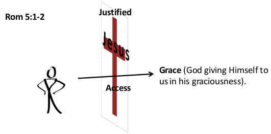

Building Kingdom Families: Grace
Listen to the sermon:
Characteristics of God's Kingdom
- The kingdom of God is not a matter of eating and drinking, but of righteousness, peace and joy in the Holy Spirit. Romans 14:17 (NIV)
- For the kingdom of God is not a matter of talk but of power. 1 Cor. 4:20 (NIV)
- Righteous
- Peace (The fruit of righteousness will be peace. Isaiah 32:17)
- Joy
- Power
Kingdom of God within and among us.
Jesus replied, "The kingdom of God does not come with your careful observation, nor will people say, 'Here it is', because the kingdom of God is within you." Luke 17:20-21 (NIV)
Before one can administrate God's kingdom within one's family, it needs to be a reality within one's own heart.
The evidence that Christ rules in one's own heart:
- Righteousness
- Peace
- Joy in the Holy Spirit
- Mighty power of God in action
Access into God's grace
Therefore, since we have been justified through faith, we have peace with God through our Lord Jesus Christ, through whom we have gained access by faith into this grace in which we now stand. And we boast in the hope of the glory of God. Not only so, but we also glory in our sufferings, because we know that suffering produces perseverance; perseverance, character; and character, hope. And hope does not put us to shame, because God's love has been poured out into our hearts through the Holy Spirit, who has been given to us. Rom 5:1-5 (NIV)
The Giant Killer: Righteousness & Grace.
For if, by the trespass of the one man, death reigned through that one man, how much more will those who receive God's abundant provision of grace and of the gift of righteousness reign in life through the one man, Jesus Christ! Rom 5:17 (NIV)
The law was brought in so that the trespass might increase. But where sin increased, grace increased all the more, so that, just as sin reigned in death, so also grace might reign through righteousness to bring eternal life through Jesus Christ our Lord. Rom 5:20-21 (NIV)
Grace: It is all of God working in ones life by the Holy Spirit. The wholly generous act of God in the experience of man by the Holy Spirit.
Righteousness: In a right standing with God just as if I had never sinned.
Life: God's eternal life. His Life is in me. That which God has in Himself.
Access : Introduced.
Leading or bringing into the presence of God.
We need an introducer – Jesus Christ. (Christ's activity)
Perfect tense – Ongoing result of a pastevent.
Grace does not exempt us from hardships
Not only so, but we also glory (rejoice) in our sufferings, because we know that suffering produces perseverance; perseverance, character; and character, hope. Rom 5:3-4 (NIV)
- Relationships where a spouse or child is not walking with God.
- Finances due to unemployment; lack or debt.
- Health
- Persecution
- Natural disasters like drought, floods
- etc etc etc...
But God's grace enables one to keep standing and overcome. To knock out the giants.
"My grace is sufficient for you, for my power is made perfect in weakness". 2 Cor 12:9a (NIV)
Character:
Indicates the result of being tested, the quality of being approved on the basis of a trial. Experience.
You have proven that God's word is real. Living proof.
Perfect:
1 to make perfect, complete. 1A to carry through completely, to accomplish, finish, bring to an end.
2 to complete (perfect). 2A add what is yet wanting in order to render a thing full. 2B to be found perfect.
3 to bring to the end (goal) proposed. 4 to accomplish. 4A bring to a close or fulfilment by event.
Strong, J. (1996). The exhaustive concordance of the Bible :
Application
God's grace reigns through righteousness.
- Overcoming a sense of failure.
God is not holding our failures against us. We can do everything through Christ who gives us strength. - Overcoming the blame game.
- Overcoming the mind wars.
- Hope for the future. Rom 5:5
Scripture quotations marked (NIV) are taken from the Holy Bible, New International Version®, NIV®. Copyright © 1973, 1978, 1984, 2011 by Biblica, Inc.™ Used by permission of Zondervan. All rights reserved worldwide. www.zondervan.com The "NIV" and "New International Version" are trademarks registered in the United States Patent and Trademark Office by Biblica, Inc.™